27마을 · 기존 주민의 노년 모습
원래 머리 모양·옷·모자를 유지한 은회색 머리와 눈가 주름, 살짝 숙인 자세.
헤이즐
원래 모습앞 · 노년뒤 · 노년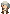
왼쪽 · 노년오른쪽 · 노년앉아서 쉬기책 읽기윌로
원래 모습앞 · 노년뒤 · 노년왼쪽 · 노년오른쪽 · 노년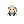
앉아서 쉬기책 읽기버나드
원래 모습앞 · 노년뒤 · 노년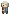
왼쪽 · 노년오른쪽 · 노년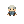
앉아서 쉬기책 읽기오스카
원래 모습앞 · 노년뒤 · 노년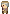
왼쪽 · 노년오른쪽 · 노년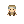
앉아서 쉬기책 읽기브루노
원래 모습앞 · 노년뒤 · 노년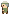
왼쪽 · 노년 오른쪽 · 노년앉아서 쉬기책 읽기
오른쪽 · 노년앉아서 쉬기책 읽기오웬
원래 모습앞 · 노년뒤 · 노년왼쪽 · 노년 오른쪽 · 노년앉아서 쉬기책 읽기
오른쪽 · 노년앉아서 쉬기책 읽기올리버
원래 모습앞 · 노년뒤 · 노년왼쪽 · 노년오른쪽 · 노년앉아서 쉬기책 읽기아이리스
원래 모습앞 · 노년뒤 · 노년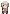
왼쪽 · 노년 오른쪽 · 노년앉아서 쉬기책 읽기
오른쪽 · 노년앉아서 쉬기책 읽기클로버
원래 모습앞 · 노년뒤 · 노년왼쪽 · 노년오른쪽 · 노년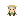
앉아서 쉬기책 읽기마일로
원래 모습앞 · 노년뒤 · 노년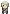
왼쪽 · 노년오른쪽 · 노년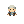
앉아서 쉬기책 읽기세이지
원래 모습앞 · 노년뒤 · 노년왼쪽 · 노년오른쪽 · 노년앉아서 쉬기책 읽기핀
원래 모습앞 · 노년뒤 · 노년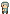
왼쪽 · 노년 오른쪽 · 노년
오른쪽 · 노년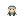
앉아서 쉬기책 읽기아서
원래 모습앞 · 노년뒤 · 노년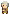
왼쪽 · 노년 오른쪽 · 노년앉아서 쉬기책 읽기
오른쪽 · 노년앉아서 쉬기책 읽기웬델
원래 모습앞 · 노년뒤 · 노년왼쪽 · 노년오른쪽 · 노년앉아서 쉬기책 읽기코스모
원래 모습앞 · 노년뒤 · 노년왼쪽 · 노년 오른쪽 · 노년
오른쪽 · 노년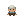
앉아서 쉬기책 읽기루디
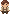
원래 모습앞 · 노년뒤 · 노년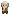
왼쪽 · 노년 오른쪽 · 노년
오른쪽 · 노년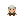
앉아서 쉬기책 읽기덱스터
원래 모습앞 · 노년뒤 · 노년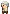
왼쪽 · 노년오른쪽 · 노년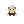
앉아서 쉬기책 읽기바질
원래 모습앞 · 노년뒤 · 노년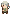
왼쪽 · 노년오른쪽 · 노년앉아서 쉬기책 읽기메리골드
원래 모습앞 · 노년뒤 · 노년왼쪽 · 노년 오른쪽 · 노년
오른쪽 · 노년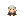
앉아서 쉬기책 읽기페넬로피
원래 모습앞 · 노년뒤 · 노년왼쪽 · 노년오른쪽 · 노년앉아서 쉬기책 읽기틸리
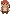
원래 모습앞 · 노년뒤 · 노년왼쪽 · 노년오른쪽 · 노년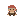
앉아서 쉬기책 읽기주니퍼
원래 모습앞 · 노년뒤 · 노년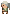
왼쪽 · 노년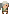
오른쪽 · 노년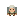
앉아서 쉬기책 읽기파피
원래 모습앞 · 노년뒤 · 노년왼쪽 · 노년오른쪽 · 노년앉아서 쉬기책 읽기